# Einführung in die Digital Humanities <br/> ### Prof. Dr. Christof Schöch <br/> <hr/> <p><strong>Bachelor Sprache, Technologie und Medien (STeM)</strong></p> <p><strong>Sommersemester 2021</strong></p> <hr/> -- ## Organisatorisches --- ### Was ist die Prüfungsleistung? * Entwickeln und präsentieren Sie im Team eine Projektidee * Mögliche Bereiche * ein neues Produkt oder einen Service * eine neue Anwendung mit gesellschaftlichem Nutzen * eine neue Anwendung für Medien, Kommunikation, Literatur, etc. * Mögliche Zielgruppen * Journalisten, Verlage, Social Media, Bibliotheken * Endnutzer:innen, "die Bevölkerung" * Forschende in DH, CL, Medienwissenschaften, etc. * Themenzuordnung * Entweder aus dem Bereich der "Einführung in die Digital Humanities" * oder: "Anwendungen der Künstlichen Intelligenz und Computerlinguistik" --- ### Prüfungsleistung: Ablauf * Sie wurden bereits einer Gruppe zugeteilt * Wenn das bei Ihnen nicht der Fall ist, bitte an Jeldo Meppen wenden (s2jemepp@uni-trier.de). * Jede Gruppe wird dann in StudIP einem Team zugeordnet * Die Teams treffen sich regelmäßig und selbständig, um eine Projektidee zu entwickeln (u.a. über Zoom) * Am Ende des Semsters wird die Projektidee präsentiert: * Prepare to present your project idea at the end of the semester via * Als "one-slide-one-minute" Präsentation * Als Poster-Präsentation * Projekttitel, Präsentation oder Poster bis 12. Juli über StudIP einreichen * Präsentation oder Poster am Donnerstag, den 15. Juli vorstellen (via Zoom oder Wonder.me) --- ### Wie wird die Projektidee bewertet? * Wie innovativ, interdisziplinär und originell ist die Idee? * Relevanz und Impact: Wie nützlich ist die Idee? * Machbarkeit: Könnte die Idee umgesetzt werden? * Teamwork: Wie gut hat das Team zusammengearbeitet? --- ### Noch mehr Formalitäten * Sie müssen sich zu der Prüfung individuell auf PORTA anmelden. * Anmeldezeitraum: ca. 2-6 Wochen vor dem Prüfungstermin. * Wenn Sie nicht zur Prüfung angemeldet sind, werden Sie nicht zur Prüfung zugelassen. * Nach Bewertung Ihrer Prüfungsleistung können Sie das Ergebnis der Prüfung in PORTA nachschlagen. --- ### Kontakt bei Fragen * Anmeldung zu Veranstaltungen oder Prüfungen: bitte an das Hochschulprüfungsamt wenden. * Fragen organisatorischer Art zu diesem Modul: Rita Thielen (thielenr@uni-trier.de). * Inhaltliche Fragen zur DH-Vorlesung oder zu ihrer DH-Projektidee haben: Christof Schöch (schoech@uni-trier.de) * Organisatorische/technische Fragen zur Gruppeneinteilung oder Postersession etc. haben: Jeldo (s2jemepp@uni-trier.de). * Generelle Fragen zum STeM-Studiengang: Sven Naumann (naumsven@uni-trier.de). -- ## Das Semester im Überblick --- ### Praktische Hinweise * Den exakten Semesterplan finden Sie im StudIP-Kursraum im Wiki * Alle Recherche-Aufgaben finden Sie dort im Bereich DoIT! * Der Zoom-Link für die synchronen Sessions steht auch dort * Diese Folien finden Sie jederzeit unter: https://dh-trier.github.io/dh-stem * Die Folien werden laufend um neue Themen ergänzt * Eine Bibliographie mit einführenden Lektüren finden Sie hier: https://www.zotero.org/groups/2162827/dh-bibliographie_trier/library --- ### Veranstaltungsformen * Die Veranstaltung ist in Wochen gegliedert * Sie findet teils asynchron, teils synchron statt * Jede Woche gibt es: * Einen Termin als Videokonferenz (synchron) zur Besprechung von Aufgaben oder Diskussion von Themen; * Eine Aufgabe zur Vorbereitung auf das Thema der folgenden Woche. Die Aufgabe kann eine Rechercheaufgabe sein oder die Auseinandersetzung mit einem Screencast. * Ggfs. weitere Aktivitäten vor allem zur Vorbereitung des Posters --- ### Die Themenübersicht 1. Was sind die Digital Humanities? 1. Digitale Edition 1. Computational Literary Studies 1. Digitale Musikwissenschaft 1. Stilometrische Autorschaftsattribution 1. Linked Open Data 1. Visualisierung 1. Open Science -- ## Thema 1: Was sind die Digital Humanities? --- ### whatisdigitalhumanities.com <a href="https://whatisdigitalhumanities.com/">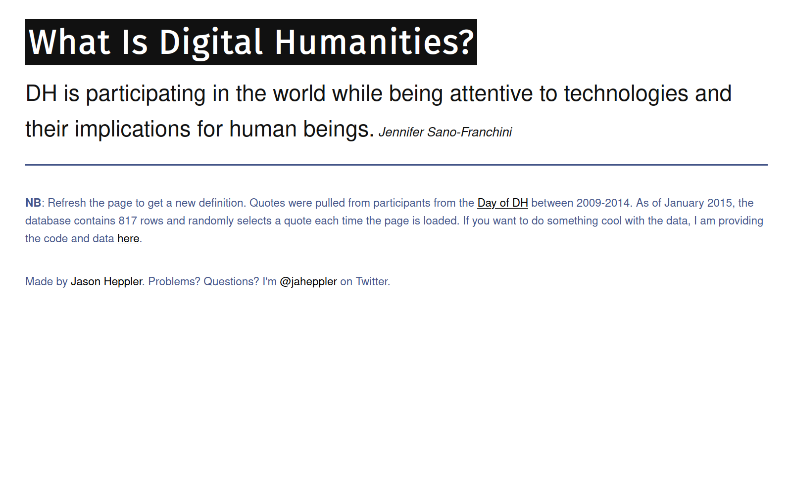</a> --- ### Kleine Fächer <a href="https://www.kleinefaecher.de/kartierung/kleine-faecher-von-a-z.html?tx_dmdb_monitoring%5BdisciplineTaxonomy%5D=140&cHash=c5b76ccd171ecce8fe0ed45c4afaa5bc">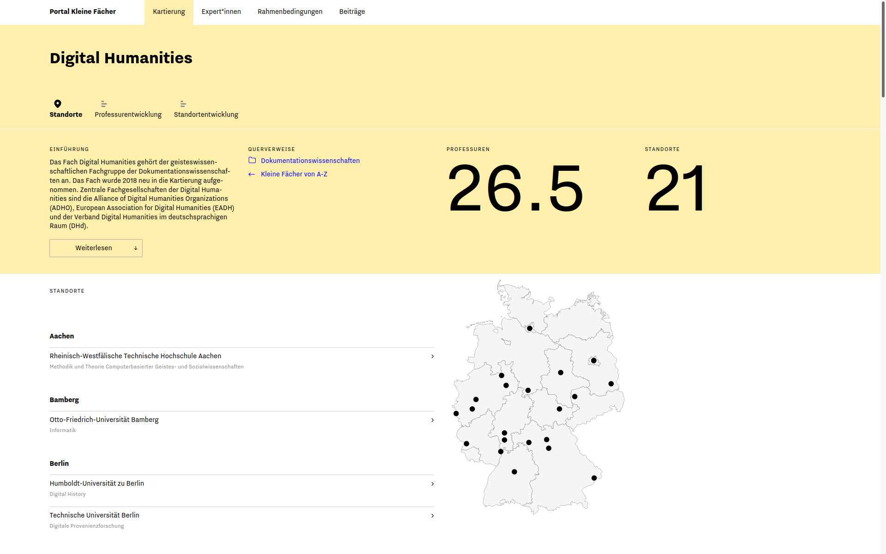</a> --- ## (1) Rechercheaufgaben <br/> * Zur Frage der Definition der Digital Humanities<br/>(whatisdigitalhumanities.com) * Zur Frage der Themen der Digital Humanities<br/>(IDHC, ZfdG) --- ## (2) DH als Disziplin? Aktuelle Trends --- ### Institutionalisierung * Verbände * D: DHd-Verband, fachbezogene AGs * Int'l: EADH, ADHO, TEI, MEI, ESTS * Jahrestagungen * D: DHd-Verband * Int'l: DHBenelux, AIUCD, HDH, DHN, DH Conference, etc. * Zeitschriften * D: Zeitschrift für digitale Geisteswissenschaften (ZfdG) * Int'l: DSH, DHQ, Digital Studies / Le champ numérique, Cultural Analytics, Umanistica digitale, Humanités numériques, uvm. * Studiengänge * D und Int'l: siehe [DH Course Registry](https://registries.clarin-dariah.eu/courses/) * Professuren * D: siehe [Portal Kleine Fächer](https://www.kleinefaecher.de/kartierung/kleine-faecher-von-a-z.html?tx_dmdb_monitoring%5BdisciplineTaxonomy%5D=140&cHash=c5b76ccd171ecce8fe0ed45c4afaa5bc) --- ### Ausdifferenzierung * Digitale Editionswissenschaften * Digital History * Computational Literary Studies * Digitale Kunstgeschichte * Digitale Musikwissenschaften<br/>/ Music Information Retrieval * Digitale Archäologie * Critical Code Studies * Game Studies * Digital Cultural Heritage Studies * Computerlinguistik * Angewandte Informatik * ... --- ### Was bedeutet das eigentlich? * Institutionalisierung <!-- .element: class="fragment" data-fragment-index="1" --> * => Konsolidierung als Disziplin * => Gemeinsame fachliche Identität * Ausdifferenzierung <!-- .element: class="fragment" data-fragment-index="2" --> * => Viele Teildisziplinen * => Spezifischere fachliche Identitäten * => Diffusion in die etablierten Disziplinen? * Folgefragen <!-- .element: class="fragment" data-fragment-index="3" --> * Gibt es ein Mainstreaming der Digital Humanities? * Wird der Begriff Digital Humanities irgendwann obsolet? * Was verbindet alle DH-Teilbereiche? --- ### Abschluss: Lektüreempfehlung <br/> * ["Was ist DH?"](https://www.zotero.org/groups/2162827/dh-bibliographie_trier/collections/KA42XEA4) auf Zotero --- ### Rechercheaufgabe 1 (IDHC) 1. Joseph Rudman: authorship attribution, statistics, stylistics, shakespeare und collaboration; 1985 bis 2017 1. "Data Modeling": 13 Einträge (keyword!) 1. Topic Modeling: seit 2013 1. TextGrid: 4 Workshops (nur Workshops!) 1. Erste Konferenz mit Details: 1. 1964 (Dez), "Conference on the Use of Computers in Humanistic Research", Rutgers 1. Themen: Computer und Literatur, Geschichte, Musikwissenschaft 1. 1964 (Sept) - Literary Data Processing Conference - Yorktown Heights (incomplete) 1. (Erwähnt auch 1960, "Maschinelle Methoden der literarischen Analyse undder Lexikographie", Tübingen) --- ### Rechercheaufgabe 1 (IDHC) * Wünsche für die Plattform * Übergreifende Suchleiste * Filter nach Keywords funktioniert nicht (gut) * übersichtlicher * Filter nach complete / incomplete data * Filter nach Ort und/oder Jahr * Nützlich, um zu verstehen, was DH ist? * Entwicklung über die Zeit * relevante Themen * guter Überblick * Keywords sind nützlich * Nein, keine Definition(en) * Nein: Nur Begriffe, keine Projekte --- ### Rechercheaufgabe 2 (whatisdigitalhumanities?) * Gemeinsamkeiten * Alle zu Digitalisierung / Technologie * Vorteile der DH * Alle eher unpräzise * Unterschiede * Sehr unterschiedlicher Stil * Unterschiedliche Länge * Teils spielen Medien eine Rolle * Teils sehr persönlich * Vergleich mit Wikipedia * Umfassender * Sachlicher * Mehr Fokus auf Humanities * Mehr Beispiele * Perspektive: Digitalisierung mit geisteswiss. Methoden * Bedeutung von Daten --- ### Rechercheaufgabe 3 (ZfdG) * Themen, die Sie interessieren * Literaturwissenschaft * Geschichtswissenschaft * Umgang mit Unsicherheit/Zweifel * Digitalisierung * Open Educational Resources * Filme * Karten * Social Networks * Märchenforschung * Blockchain * Dominierende Themen 2019-2020 * Netzwerke * Modellierung * Methodologie * (digitale) Literaturwissenschaft * Edition --- ### Rechercheaufgabe 4 (Screencast) * (1) Mit welchem Fach fühlen Sie sich verbunden? * Medienwissenschaften * Digitale Musikwissenschaften * Computerlinguistik * Digitale Kunstgeschichte * Digital History * Sprachwissenschaften * Filmwissenschaft * Philosophie * Politikwissenschaft * Game Studies * Computational Literary Studies / Litwiss. --- ### Rechercheaufgabe 4 (Screencast) * (2) Stand in ihrem Fach? * Diskussionsbeiträge -- ## Thema 2: Digitale Edition --- #### Letters of Van Gogh <a href="http://vangoghletters.org/vg/">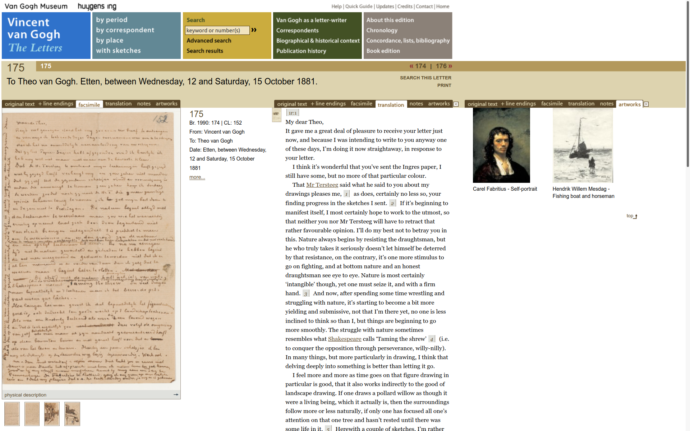</a> --- ### (1) Vorteile Digitaler Editionen 1. Durchsuchbarkeit / Übersichtlichkeit <!-- .element: class="fragment" data-fragment-index="1" --> 1. Dynamik / Interaktivität: verschiedene Perspektiven <!-- .element: class="fragment" data-fragment-index="2" --> 1. Text + Raum für Erläuterungen <!-- .element: class="fragment" data-fragment-index="3" --> 1. Zusammenführung großer Datenmengen <!-- .element: class="fragment" data-fragment-index="4" --> 1. Keine Platzbegrenzung: Varianten, Kommentare, ... <!-- .element: class="fragment" data-fragment-index="5" --> 1. Multimedialität: Text, Bild, Ton <!-- .element: class="fragment" data-fragment-index="6" --> 1. Unabhängig von Ort, Zeit, Budget nutzbar <!-- .element: class="fragment" data-fragment-index="7" --> 1. Weiterverarbeitung der Daten <!-- .element: class="fragment" data-fragment-index="8" --> 1. Vernetzung mit anderen Ressourcen <!-- .element: class="fragment" data-fragment-index="9" --> --- ### (1) Weitere Vorteile 1. "jederzeit erweiterbar / korrigierbar": siehe http://faustedition.net/, "1.2 RC" <!-- .element: class="fragment" data-fragment-index="1" --> 1. "Umweltfreundlich" (kein Druck) <!-- .element: class="fragment" data-fragment-index="2" --> 1. "Langfristige Aufbewahrung fragiler Objekte" <!-- .element: class="fragment" data-fragment-index="3" --> 1. "Text ist gesichert" = Edition; nicht speziell digitale Edition <!-- .element: class="fragment" data-fragment-index="4" --> 1. "erhöhte Authentizität und Transparenz" <!-- .element: class="fragment" data-fragment-index="5" --> 1. "größere Reichweite": guter Punkt (Anbietenden-Perspektive) <!-- .element: class="fragment" data-fragment-index="6" --> 1. "Vernetzung über Normdaten": zum Beispiel GND (Autor:innen, Werke) oder TGN (Ortsnamen) <!-- .element: class="fragment" data-fragment-index="7" --> 1. "Kann auf allen Geräten genutzt werden": auch mobile Endgeräte <!-- .element: class="fragment" data-fragment-index="8" --> --- ### (1) Weitere Punkte 1. "Visualisierungen": visuelle,<br/>ggfs. dynamische Aufbereitung der Daten <!-- .element: class="fragment" data-fragment-index="1" --> 1. Möglichkeit der Kommentierung <!-- .element: class="fragment" data-fragment-index="2" --> 1. Ästhetisch ansprechende Umsetzung <!-- .element: class="fragment" data-fragment-index="3" --> 1. Nachteil: sehr großer Aufwand bei der Erstellung <!-- .element: class="fragment" data-fragment-index="4" --> --- ### Typen von Editionen 1. Faksimile-Ausgabe 1. Textarchiv 1. Knowledge Site 1. Social Edition 1. Historisch-Kritische Ausgabe 1. Medien-Edition --- ### (2) Schlegel-Briefedition: Vorteile? * https://august-wilhelm-schlegel.de/briefedigital/ * Flexibler Zugriff: z.B. Filter nach Kategorien, Register <!-- .element: class="fragment" data-fragment-index="1" --> * Durchsuchbarkeit: ja, Volltextsuche <!-- .element: class="fragment" data-fragment-index="2" --> * zuverlässiger Text: (woran festmachen?) <!-- .element: class="fragment" data-fragment-index="3" --> * Flexible Darstellung: ja, Anzeigeoptionen (links / rechts / oben) <!-- .element: class="fragment" data-fragment-index="4" --> * Visualisierungen: Wordle der Korrespondent:innen <!-- .element: class="fragment" data-fragment-index="5" --> * Einfache Erreichbarkeit: ja <!-- .element: class="fragment" data-fragment-index="6" --> * Transparenz: Faksimile zur Transkription (prüfbar) <!-- .element: class="fragment" data-fragment-index="7" --> * Normdaten: vorhanden (GND) <!-- .element: class="fragment" data-fragment-index="8" --> --- ### (2) Schlegel-Briefedition * Erläuterungen: [Beispiel](https://august-wilhelm-schlegel.de/version-10-20/briefid/860) <!-- .element: class="fragment" data-fragment-index="1" --> * Ergänzungen: ja, siehe "Version 10-2020" <!-- .element: class="fragment" data-fragment-index="2" --> * Keine Platzbegrenzung / große Datenmengen: ja, 5000 Briefe! <!-- .element: class="fragment" data-fragment-index="3" --> * Multimedialität: Text und Bild, aber kein Audio <!-- .element: class="fragment" data-fragment-index="4" --> * Umweltfreundlich: ja (aber Server!) <!-- .element: class="fragment" data-fragment-index="5" --> * Weitere Analysen: ja, durch XML (aber kein "bulk download") <!-- .element: class="fragment" data-fragment-index="6" --> * Ansonsten positiv: Zitierempfehlung <!-- .element: class="fragment" data-fragment-index="7" --> --- ### (2) Schlegel-Briefedition * Übersichtlichkeit? <!-- .element: class="fragment" data-fragment-index="1" --> * Vernetzung zu anderen Ressourcen? <!-- .element: class="fragment" data-fragment-index="2" --> * Interaktivität? <!-- .element: class="fragment" data-fragment-index="3" --> * Übersetzungen? <!-- .element: class="fragment" data-fragment-index="4" --> * Texte bearbeiten? <!-- .element: class="fragment" data-fragment-index="5" --> * Texte kommentieren? <!-- .element: class="fragment" data-fragment-index="6" --> --- ### (3) Digital Scholarly Editions * https://v3.digitale-edition.de/ * Mehrfach genannt * Faustedition, http://faustedition.net/ * Jane Austen, https://janeausten.ac.uk/index.html * Humboldt-Edition, https://edition-humboldt.de/) * DDR-im-Blick, http://www.ddr-im-blick.de/ * Mozart-Briefe, https://dme.mozarteum.at/briefe-dokumente/# -- ## Thema 3: Computational Literary Studies --- ### Komödien, Tragödien, Tragikomödien 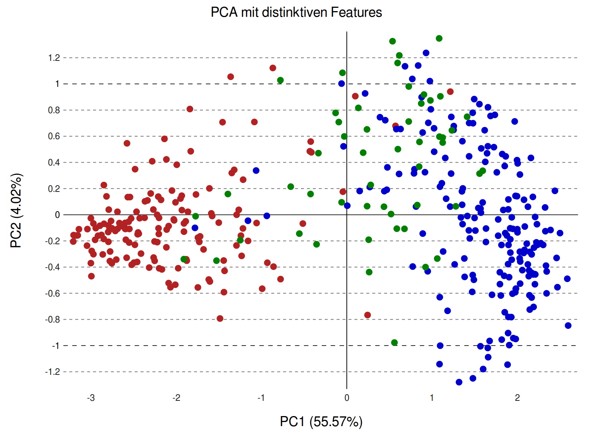 <br/><p>(rot: Komödien; blau: Tragödien; grün: Tragikomödien)</p> --- ### Rechercheaufgabe 1: Forschungsfragen * Frage: Beschreiben Sie eine konkrete Fragestellung, die Sie sich selbst überlegt haben, für die man eine der erwähnten Methoden anwenden könnte. * Warum glauben Sie, dass die Methode, die Sie gewählt haben, gut für die gewählte Fragestellung geeignet sein könnte? --- ### Kontrastive Analyse 1a (explorativ) * Berichterstattung zur Pandemie in D und UK (Sprache!) * Emails zu Kategorien zuordnen (bzw.: Merkmale der Klassen finden) * Wie veränderten sich die Lyrics der Top 20 Rap Songs jedes Jahres in den letzten zehn Jahren? * Unterscheidet sich die Wortverwendung in Einzelchats vs. Gruppenchats? * Berichterstattung verschiedener Zeitungen zu einem Thema * Worin unterscheiden sich satirische Texte und Kritik? * Vergleich von Schiller und Shakespeare in der Wortwahl * Ist Schillers Sprache verständlicher als Goethes Sprache? (Operationalisierung?) --- ### Kontrastive Analyse 1b (explorativ) * Wie unterscheiden sich die verschiedenen Texte der Poetry Slammer an einem Abend? * Werden alle Parteien in der öffentlich-rechtlichen Medienberichterstattung, vor anstehenden Wahlen, gleichermaßen behandelt? * Wenn man romantische und klassische Romane vergleicht, welche Wörter werden in beiden Genres am häufigsten verwendet? * Woran erkennt der Leser, ob es sich um Fachliteratur oder Unterhaltungsliteratur handelt? (rezeptionsorientiert gefragt!) * Welcher Wortschatz sorgt in welcher Epoche (z.B. Romantik) dafür, dass ein bestimmtes literarisches Werk populär wird? (siehe: The Bestseller Code) * Wie unterscheidet sich der Schreibstil des ersten Harry Potter Buches im Vergleich zum letzten Harry Potter Buches? --- ### Kontrastive Analyse 1c (explorativ) * In welchen Punkten gleichen und unterscheiden sich Goethes Werke von 1774 bis 1780, mit seinen Werken von 1794 bis 1800? * Welche Wörter werden in Komödien am häufigsten verwendet und sind somit charakteristisch für Komödien? --- ### Kontrastive Analyse 2 (gezielt) * Goethe: "Trauer"-Motiv in Werther vs. Faust (eigene "Keywords") * Vergleich der Wortlänge in Wissenschaftsprosa vs. andere Texte * Wie häufig kommt im Genre Drama im Vergleich zum Genre Horror das Wort „Tod“ vor? * Prüfen der Übereinstimmung zwischen Erwartung und Antwort in Klausuren * Bekommt Söder oder Laschet mehr Aufmerksamkeit (=Nennungen) in den Medien? * Wie sieht das Verhältnis in Texten zwischen Substantiven und (Eigen-)namen aus. --- ### Clustering * Autorschaft von Shakespeare (siehe: Stilometrische Autorschaftsattribution) * Biblische Motive in Süskinds Parfum identifizieren (siehe: "Text Re-Use") * Wie stark unterschiedlich sind die Texte zueinander, bei verschiedenen Autoren? * Das Einordnen von Texten (z.B. Zeitungsartikel, Romane) nach ihren Themen (siehe: Topic Modeling) --- ### Klassifikation * Texte in Online-Bibliotheken ordnen (Klassen zuordnen) * Pro- und Contra-Argumente in Texten identifizieren (siehe: "Argument Mining") * Gehören alle Stücke eines/r Musikers/in zur gleichen Musikrichtung? (Merkmale, Klassen) * Zu welcher Textart kann man einen Text zuordnen? * Welche Altersempfehlung sollte einem Roman gegeben werden? (Klassifikation) * Welche der vorhandenen Texte sind antik und welche sind modern? (siehe: Chrono-Stilometrie) --- ### Suche in Texten, ggfs. mit RegEx * Text finden, in denen Ernie und Bert vorkommen * Prüfen, ob Texte / Songs / etc. als "explicit content" markiert werden müssen (Jugendschutz, Demokratie-Gefährdung, etc.) * Alle Wörter in einem Text, die mit "S" beginnen: Reguläre Ausdrücke (ja!) * Wie oft kommt das Wort "Thor" im Faust in der direkten Rede vor? (Klassifikation+Suche) * Wie oft kommt eine beliebige Zeichenkette in einem Text vor? * Welcher der beiden deutschen Autoren (im Vergleich zueinander stehen Goethe und Schiller) verwendet in seinen lyrischen Werken bzw. Gedichten öfter ein „Lyrisches Ich“? * Wie oft wird eine bestimmte Zeichenkette in einem Text verwendet? --- ### Weitere Fragen / Methoden * Inwiefern lässt sich ein positiv bzw. negativ geprägtes Bild auf die Corona-Pandemie in verschiedenen ausgewählten Berichterstattungen erkennen? (siehe: Sentiment Analyse) * In welchen Tragödien oder Krimis erhält der Leser einen besonders guten Einblick in die Gedankengänge des Protagonisten und wird auch in das Geschehen integriert? (operationalisiert über: Anteile an Monologen des Protagonisten) * Gibt es reine Reime in diesem Text? * Gibt es sprachliche Gemeinsamkeiten zwischen den Genres der Fantasy und Dystopie? --- ### Erläuterungen zur Stilometrie * Siehe: https://dh-trier.github.io/dh-vorlesung/reveal/DH-E11_Textanalyse-1.html#/4/4 -- ## Thema 4: Digitale Musikwissenschaft --- ### Bereiche der digitalen Musikwissenschaft * Digitale Musikedition <!-- .element: class="fragment" data-fragment-index="1" --> * Optical Music Recognition <!-- .element: class="fragment" data-fragment-index="2" --> * Music Information Retrieval <!-- .element: class="fragment" data-fragment-index="3" --> * Music Generation <!-- .element: class="fragment" data-fragment-index="4" --> * Quantitative Musikgeschichte <!-- .element: class="fragment" data-fragment-index="5" --> --- ### In welcher Form liegt Musik digital vor? * Repräsentation des Notentextes <!-- .element: class="fragment" data-fragment-index="1" --> * Notation nach kulturell definierten Konventionen * visuelle Repräsentation (Druck, PDF) * dient vor allem der Aufführung durch Menschen * Symbolische Repräsentation <!-- .element: class="fragment" data-fragment-index="2" --> * diskrete Einheiten mit ihren Eigenschaften<br/>(Noten mit Tonhöhe, Dauer, Lautstärke, Instrument) * kodiert nach Datenstandards (XML/MEI, MusicXML; MIDI) * maschinenlesbar, kann Synthesizer steuern * Repräsentation des Audiosignals <!-- .element: class="fragment" data-fragment-index="3" --> * kontinuierliches physikalisches Signal (Schallwellen) * kodiert in Audiodateien (MP3, WAV, etc.) * hörbar; Vertriebsformat von Musik --- ### Beispiel Notentext 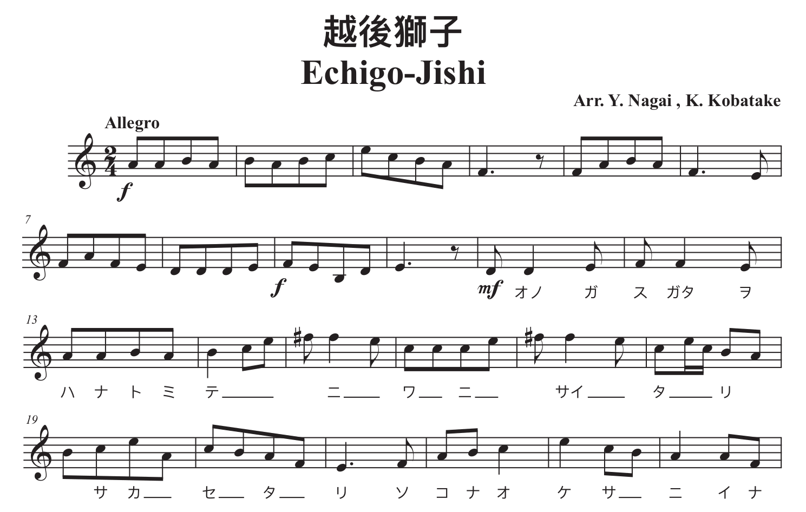 <br/><small>(Quelle: <a href="https://www.musicxml.com/de/music-in-musicxml/example-set/">https://www.musicxml.com/de/music-in-musicxml/example-set/</a>.)</small> --- ### Beispiel MusicXML <a href="img/musicxml-wikipedia.png">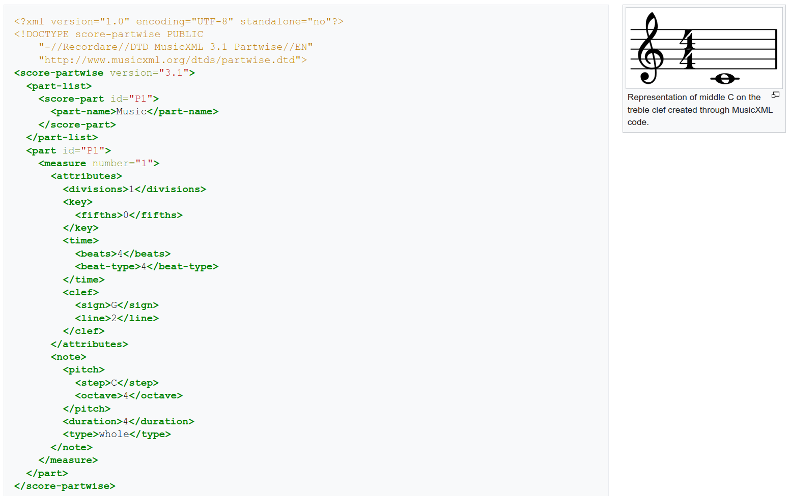</a> <br/><small>(Quelle: <a href="https://en.wikipedia.org/wiki/MusicXML">https://en.wikipedia.org/wiki/MusicXML</a>, CC BY-SA.)</small> --- ### Beispiel Audiodaten <a href="img/mueller_audiodaten1.png">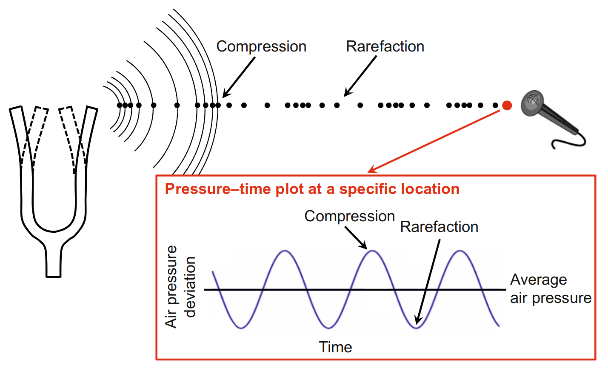</a> <a href="img/mueller_audiodaten2.png">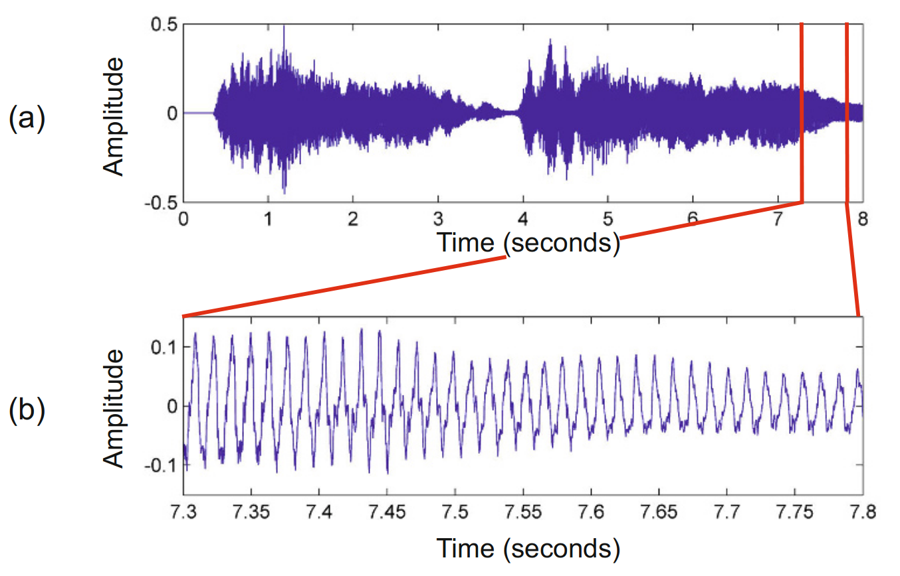</a> <br/><small><br/>Links: Prinzip; rechts: authentische Aufnahme. <br/><br/>(Quelle: Müller, Advances in Music Information Retrieval, 2015.)</small> --- ### Optical Music Recognition 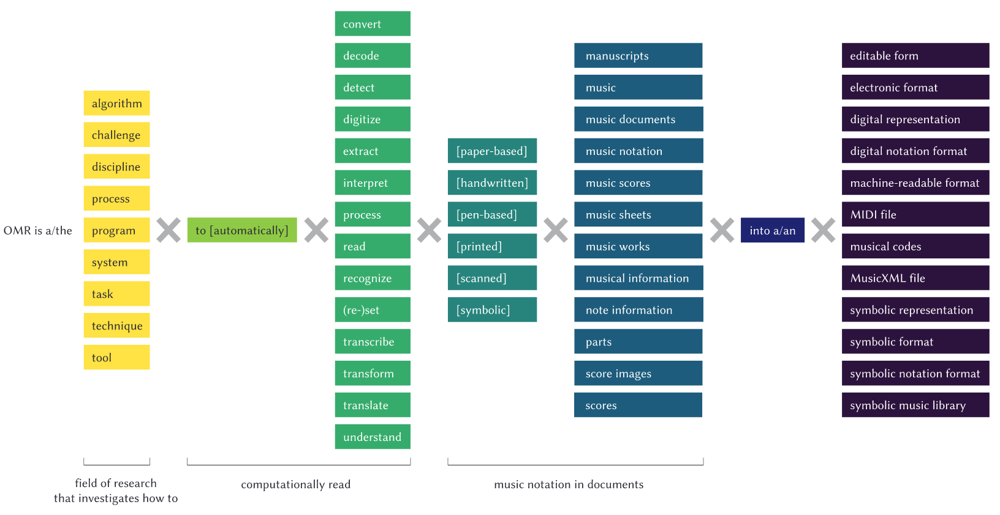 --- ### Digitale Musikedition <a href="img/beethoven0.png">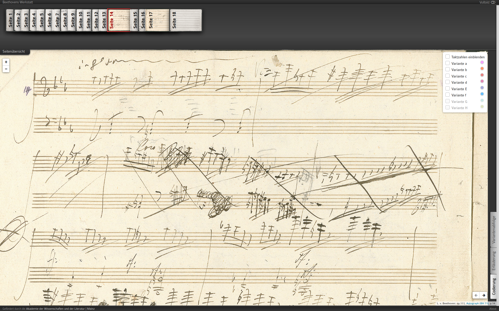</a> <a href="img/beethoven1.png">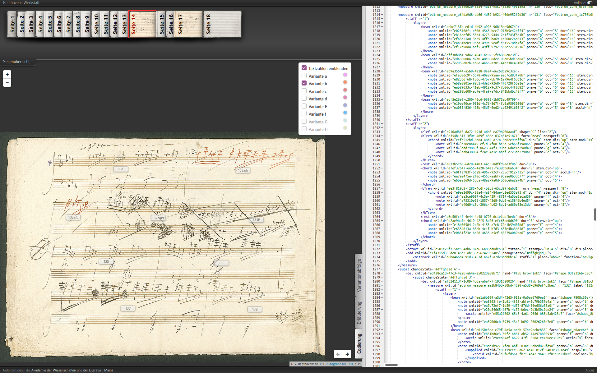</a><br/><a href="img/beethoven2.png">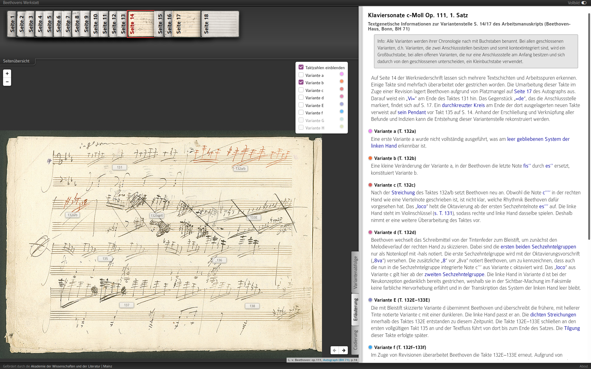</a> <a href="img/beethoven3.png">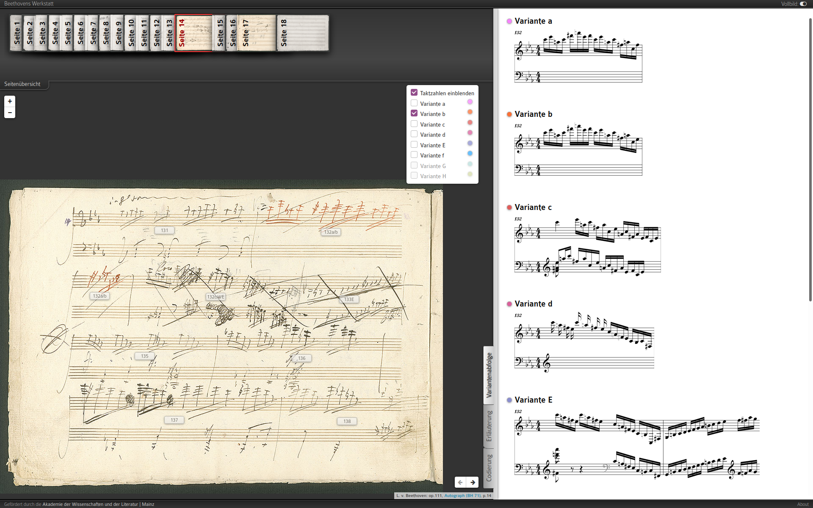</a> <br/><small><a href="https://demo.beethovens-werkstatt.de/index.html">https://demo.beethovens-werkstatt.de/index.html</a></small> --- ### Music Information Retrieval * Eigenes Gebiet, analog zum Information Retrieval <!-- .element: class="fragment" data-fragment-index="1" --> * Operiert auf Noten, symbolischer Repräsentation oder Audiodaten <!-- .element: class="fragment" data-fragment-index="2" --> * Prinzip: <!-- .element: class="fragment" data-fragment-index="3" --> * Eine umfangreiche Sammlung von Musikstücken liegt vor * Die Stücke sind als Ganze über Merkmale repräsentiert (Merkmalsraum) * Ein Musikstück repräsentiert eine Abfrage ("query") * Es sollen weitere, relevante Musikstücke gefunden werden * Ähnliche Stücke sind gute Antworten * Anwendungsszenarien <!-- .element: class="fragment" data-fragment-index="4" --> * Empfehlungssysteme * Plagiatserkennung / Upload-Filter * Künstler- oder Genre-Erkennung --- ### Query im Merkmalsraum 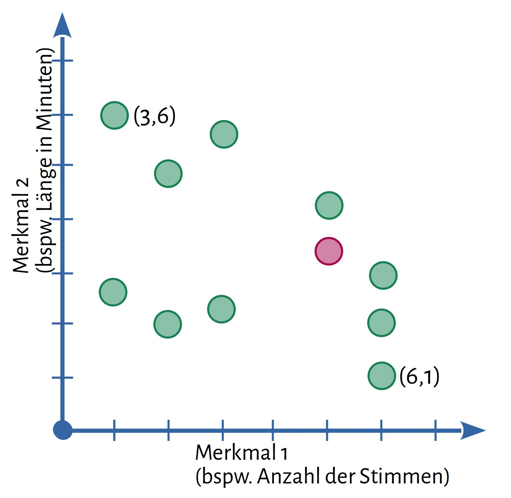 --- ### Music Generation * Verwendet Deep Learning <!-- .element: class="fragment" data-fragment-index="1" --> * Deep Learning = Künstliche Neuronale Netze * Wird gerne auch als KI bezeichnet * Vorgehensweise <!-- .element: class="fragment" data-fragment-index="1" --> * Das neuronale Netz wird mit sehr vielen Musikstücken (bspw. in MIDI) trainiert * Es lernt, welche Muster für diese Musik typisch sind * Es kann dann mehr oder weniger lange, ähnliche Fragmente generieren * Welcher Output entsteht? <!-- .element: class="fragment" data-fragment-index="1" --> * Meist MIDI-Output (ohne Rendering) * Neuerdings: auch Audioautput * Herausforderungen <!-- .element: class="fragment" data-fragment-index="1" --> * Musikalität: Rythmus, Melodie, Tonart * Kohärenz: Struktur über größere Abschnitte hinweg * Kreativität: keine einfache Wiederholung --- ### Lektürehinweise * Briot, Jean-Pierre, and François Pachet, ‘Music Generation by Deep Learning - Challenges and Directions’, Neural Computing and Applications, 32.4 (2020), 981–93 <https://doi.org/10.1007/s00521-018-3813-6> * Calvo-Zaragoza, Jorge, Jan Hajič Jr, and Alexander Pacha, ‘Understanding Optical Music Recognition’, ACM Computing Surveys (CSUR), 53.4 (2020), 1–35 * Mauch, M., R. M. MacCallum, M. Levy, and A. M. Leroi, ‘The Evolution of Popular Music: USA 1960-2010’, Royal Society Open Science, 2.5 (2015), 150081–150081 <https://doi.org/10.1098/rsos.150081> * Müller, Meinard, ‘Music Representations’, in Advances in Music Information Retrieval, Studies in Computational Intelligence (Berlin Heidelberg: Springer-Verlag, 2010), pp. 1–37 <https://doi.org/10.1007/978-3-642-11674-2> --- ### Rechercheaufgabe A: Weitere Aspekte? --- ### Music Recommender Systeme * Was wird empfohlen? * Einzelne Stücke * Alben * Künstler * Musiksquenzen * Auf welcher Grundlage beruht die Empfehlung? * "collaborative filtering" * "content-based" * metadata * user-generated text * audio-signal * derived features --- ### Rechercheaufgabe B: Schubert <a href="https://www.youtube.com/watch?v=R69JYEfCSeI">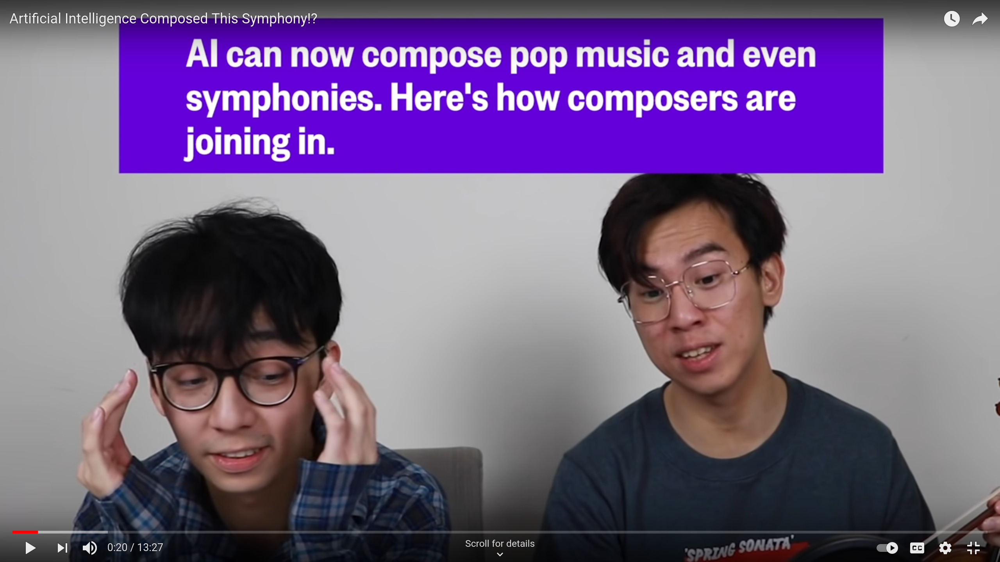</a> * [Video](https://www.youtube.com/watch?v=R69JYEfCSeI) und [Artikel](https://www.nbcnews.com/mach/science/ai-can-now-compose-pop-music-even-symphonies-here-s-ncna1010931) * Erläutern Sie in einem zusammenhängenden, kurzen Text (etwa 100 Wörter) anhand einiger Argumente, die Ihnen besonders wichig erscheinen, ob hier ein Verfahren der Künstlichen Intelligenz erfolgreich für das Komponieren klassischer Musik eingesetzt wurde oder nicht. --- ### Fragen (1a) * War der Algorithmus Ihrer Meinung nach erfolgreich? (J/N/T) --- ### Fragen (1b) * Welche Argumente sprechen für den Erfolg des Algorithmus? * Ich habe selbst nicht herausgehört, dass es algorithmisch generierte Musik war * Die ausgebildeten Musiker schienen überzeugt * Die Musik klingt wirklich wie klassische Musik * Die Musik klingt wirklich wie Schubert * Die Musik klingt ästhetisch ansprechend * Die Musik ist sinnvoll bezüglich Rhythmus, Tonart und/oder Melodie * Musik ist selbst regelhaft, sodass ein Algorithmus das gut kann --- ### Fragen (1c) * Welche Argumente sprechen gegen den Erfolg des Algorithmus? * Der Algorithmus ist nicht in der Lage, musikalische Übergänge zu gestalten * Der Algorithmus beachtet die Gesamtstruktur der Symphonie nicht * Die resultierende Musik wiederholt sich zu sehr * Die Musik klingt eben doch nicht ganz wie Schubert * Der Algorithmus hat nur die Noten generiert, nicht die aufgeführte Musik * Der Komponist hat aus mehreren Optionen die beste herausgesucht * Ob Schubert die Symphonie genau so weitergeführt hätte, ist zweifelhaft --- ### Fragen (2a) * Finden Sie, dass man dem Algorithmus Kreativität zusprechen kann? --- ### Fragen (2b) * Welche Argumente sprechen Ihrer Meinung nach für die Kreativität? * Der Algorithmus hat neue Strukturen generiert. * Der Algorithmus hat neue Melodien generiert. * Dem Algorithmus gehen nie die Ideen aus * Das Ergebnis war nicht vorhersehbar. --- ### Fragen (2c) * Welche Argumente sprechen Ihrer Meinung nach gegen die Kreativität? * Letztlich setzt der Algorithmus nur zufällig vorhandene Muster neu zusammen * Ein KI-Algorithmus ist wie ein Instrument, erst gemeinsam mit einem Menschen gelingt es wirklich * Ein KI-Algorithmus hat keine Individualität / Originalität * Der Algorithmus kann keine Emotionen berücksichtigen * Der Algorithmus "versteht" die Musik nicht wirklich * Es bleibt "gutes Handwerk" ohne Aussage / Intention * Der Algorithmus kann sich nicht durch Erfahrung in der Welt inspirieren --- ### Antwort-Beispiel >Ja, das Verfahren der Künstlichen Intelligenz wurde erfolgreich für das Komponieren klassischer Musik eingesetzt, da es wirklich so klingt, als sei es vom ursprünglichen Komponisten der Symphonie stammt. Es wurde erwähnt eine K.I. könnte ja niemals an die kreativen Fähigkeiten eines Menschen rankommen oder diese eben ersetzen, aber ich finde eine K.I. muss hierfür ja nicht eine angeborene „menschliche“ Kreativität haben, wenn das Verfahren doch nachweislich funktioniert hat. Ich fand den Satz, dass selbst die schönste Musik letztendlich nur ein Code sei, da ganz passend. Ein weiteres gutes Argument dafür ist, dass eine K.I. im Gegensatz zu einem Menschen ja nie müde wird und somit kontinuierlich Songs komponieren könnte. --- ### Antwort-Beispiel >Meiner Meinung nach wurde hier mithilfe von Künstlicher Intelligenz erfolgreich ein Musikstück geschrieben. Ein erstes Argument dafür sehe ich darin, dass für mich beim Hören die von der KI komponierten Teile nicht von denen von Schubert komponierten Teilen zu unterscheiden war. Zwar bin ich auch nicht wirklich ein Fan von klassischer Musik, aber selbst der Musiker im Video sagt, er könne beides nicht auseinander halten, was definitiv ein Indiz dafür ist, dass die Künstliche Intelligenz beim Komponieren erfolgreich war. Des Weiteren hätte ich bei künstlich erzeugter Musik erwartet, dass sie viel eintöniger und langweiliger klingen würde, als das gezeigte Stück, das viele Variationen und verschiedene Instrumente beinhaltete. Zwar werden im Video auch negative Kommentare gezeigt, die das Stück unter anderem als "Müll" bezeichnen, dem hätte ich aber entgegenzusetzen, dass dieses Stück sehr viel anspruchsvoller klingt, als vieles, was heutzutage im Radio läuft und von echten Menschen produziert wurde. Daher kann man meiner Meinung nach schon sagen, dass die KI hier erfolgreich eingesetzt wurde. --- ### Anwort-Beispiel >Wurde eine künstliche Intelligenz erfolgreich eingesetzt um Schuberts klassisches Werk (Symphony) zu vollenden? Ich bin der Ansicht teilweise. Zu aller Erst sollte gesagt sein, dass dies ein riesiger Fortschritt ist. Ein Werk so zu vollenden ohne auch nur einmal mit dem original Komponisten gesprochen oder einen „live“ Einblick in seine Vorgehensweise bekommen zu haben, ist an sich schon ein (Kunst)werk. Durch die neuste Technologie wird uns ein Einblick in die Intentionen und Gedanken eines Menschen gegeben, der sich längst nicht mehr selber dazu äußern kann. Durch Muster und Wiederholungen werden Gedankengänge und die daraus resultierenden Endprodukte aufs kleinste und einfachste heruntergebrochen. Doch für das Beispiel von Schubert bedarf es noch weitere Experten, die wissen wie sie mit dem herausgezogenen Datenset weiterverfahren. So hat die AI nicht all die Arbeit getan, sondern Cantor entwarf das finale Stück. Demnach bleibe ich bei meiner Meinung und sage die künstliche Intelligenz hat eine enorme Rolle gespielt für den Erfolg des Projektes, jedoch klappt es (noch) nicht ganz ohne Feinschliff um es auf 100% zu bringen. -- ## Thema 5: Topic Modeling -- ## Thema 6: Linked Open Data -- ## Thema 7: Visualisierung -- ## Thema 8: Open Science